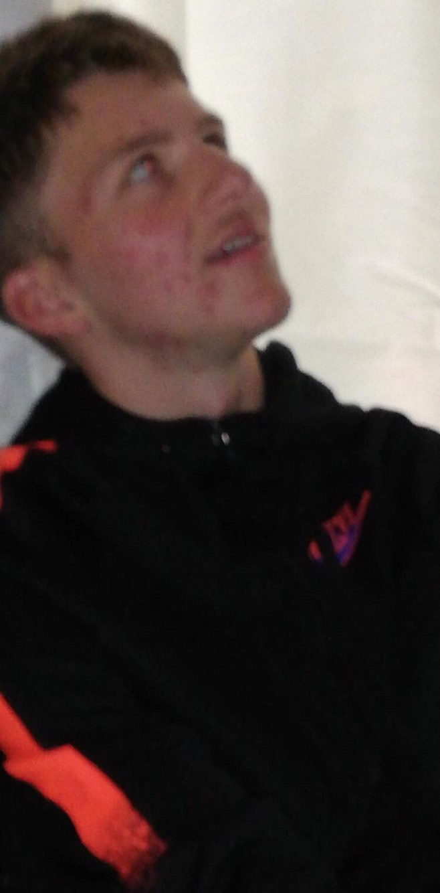

☰
GOATEDBBALL
the official website of goatedbball

In life, there are ups and downs.
You might be going through a down right now,
but remember for every down, there is an up!
NEVER GIVE UP AYYYYEEE"
-Jayden Buman

From the outskirts of rural Australia, Andre Whitehead grew up in humble beginnings as a rather happy boy. With his bright and indeed clever mind, he was accepted into the prestigious Perth Modern School, where he found his belevolent love and passion for basketball. It was at Mod where he fulfilled his potential, becoming arguably the best shooter in basketball history, only second to his highness AlanNBAGoat. Despite his rocky allegiances between the fobery and brethren, he is still solidified in the Mod Hall of Fame. As an aspiring businessman, he has also launched his own brand, GOATEDBBALL©, featuring all the best NBA Highlights which may or may not be illegal, and so in his honour, we have created the official GOATEDBBALL© website. Click the buttons below to see his highly credited Instagram posts, or take some fun quizzes, and remember, you too can become a GOAT!